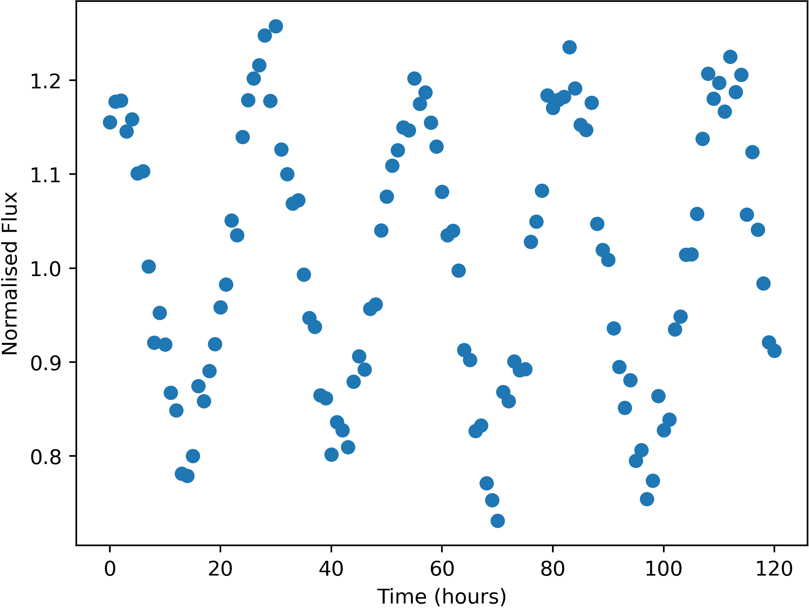

Some stars in the sky were found to change in apparent brightness over time, usually following a periodic trend.

Example of a variable star lightcurve - star FrontS92817
Units of the variable data are:
Uncertainties in this data (one standard deviation) are:
Here is a list of the flashes detected, with their approx. positions and number of photons detected. Positions are given by where they would appear in the relevant wide-field camera image. Positions are only accurate to 0.05 degrees (one standard deviation).
The X-Ray camera is sensitive to burts of more than 174 photons only.
| Name | Direction | X | Y | Photon-Count |
|---|---|---|---|---|
| FE01 | Right | -3.67 | -33.80 | 66050 |
| FE02 | Left | 18.19 | 35.76 | 1428 |
| FE03 | Front | -28.56 | -41.77 | 504 |
| FE04 | Left | -5.34 | 42.95 | 397 |
| FE05 | Back | -11.59 | 30.00 | 146126 |
| FE06 | Front | -28.57 | 24.76 | 895 |
| FE07 | Right | -38.21 | -42.86 | 4111219 |
| FE08 | Left | -5.41 | 42.67 | 386 |
| FE09 | Top | 2.00 | -34.71 | 144676 |
| FE10 | Left | 9.31 | 12.74 | 443 |
| FE11 | Top | 11.72 | -28.14 | 817 |
| FE12 | Top | -39.17 | 0.09 | 292 |
| FE13 | Back | 34.70 | -20.73 | 342 |
| FE14 | Top | 11.75 | -28.26 | 769 |
| FE15 | Front | -28.53 | -42.08 | 489 |
| FE16 | Back | 4.61 | -13.72 | 376 |
| FE17 | Left | 30.06 | 6.06 | 568 |
| FE18 | Bottom | 8.24 | 33.54 | 4521 |
| FE19 | Top | 32.84 | 19.79 | 468 |
| FE20 | Back | -43.24 | 36.64 | 50950 |
| FE21 | Right | -35.07 | -1.34 | 6438492 |
| FE22 | Left | -27.05 | 11.06 | 361 |
| FE23 | Front | 37.54 | -26.77 | 711 |
| FE24 | Top | 2.38 | 39.45 | 567 |
| FE25 | Left | -23.23 | 23.52 | 617 |
| FE26 | Front | -18.59 | 6.05 | 1112 |
| FE27 | Right | 32.35 | 30.51 | 352 |
| FE28 | Top | 34.64 | 22.96 | 816 |
| FE29 | Right | 44.31 | 40.10 | 50835 |
| FE30 | Back | -41.83 | 12.80 | 347 |
| FE31 | Left | -37.30 | -42.79 | 391 |
| FE32 | Right | 14.01 | -33.48 | 322 |
| FE33 | Front | 28.57 | -41.79 | 4245172 |
| FE34 | Top | -39.08 | 0.20 | 269 |
| FE35 | Left | 30.06 | 6.06 | 661 |
| FE36 | Top | 34.82 | -16.11 | 471 |
| FE37 | Right | -4.52 | 0.96 | 574 |
| FE38 | Bottom | 8.30 | 32.81 | 4542 |
| FE39 | Right | -3.70 | -34.00 | 66205 |
| FE40 | Left | -4.38 | -33.04 | 74764 |
| FE41 | Front | -18.35 | 6.10 | 1117 |
| FE42 | Front | -40.85 | 20.45 | 845 |
| FE43 | Right | -22.19 | 11.17 | 489 |
| FE44 | Top | -39.13 | 0.07 | 263 |
| FE45 | Right | 44.48 | 31.21 | 370 |
| FE46 | Back | -16.36 | 27.34 | 410 |
| FE47 | Left | -1.13 | -2.99 | 337 |
| FE48 | Top | 34.74 | 23.00 | 814 |
| FE49 | Right | 9.89 | -8.56 | 426 |
| FE50 | Front | -38.02 | -0.80 | 2522 |
| FE51 | Left | -8.16 | -12.85 | 407 |
| FE52 | Back | -36.06 | 18.29 | 314 |
| FE53 | Right | 32.36 | 30.52 | 380 |
| FE54 | Front | -36.88 | -0.80 | 2513 |
| FE55 | Top | 34.61 | 23.20 | 790 |